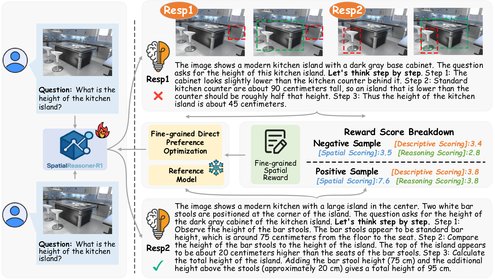
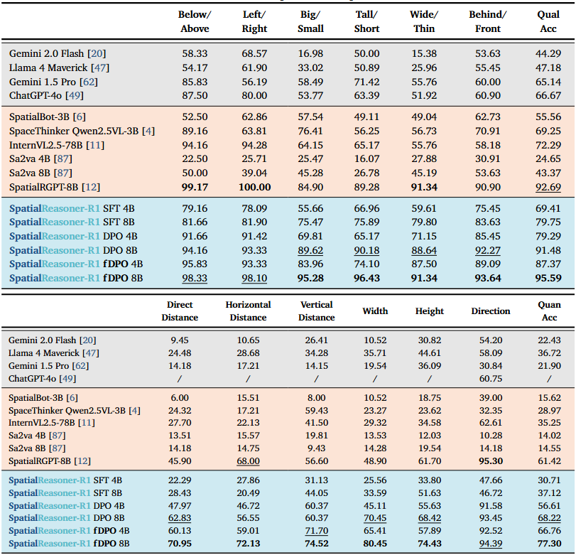

Fine-Grained Preference Optimization Improves Spatial Reasoning in VLMs
NeurIPS 2025

Abstract
Current Vision-Language Models (VLMs) struggle with fine-grained spatial reasoning, particularly when multi-step logic and precise spatial alignment are required. In this work, we introduce SpatialReasoner-R1 a vision-language reasoning model designed to address these limitations. To construct high-quality supervision for spatial reasoning, we design a Multi-Model Monte Carlo Tree Search (M3CTS) method that generates diverse, logically consistent Long Chain-of-Thought (LongCoT) reasoning trajectories. In addition, we propose fine-grained Direct Preference Optimization (fDPO), which introduces segment-specific preference granularity for descriptive grounding and logical reasoning, guided by a spatial reward mechanism that evaluates candidate responses based on visual consistency, spatial grounding, and logical coherence. Experimental results demonstrate that fDPO achieves an average improvement of 4.1% over standard DPO across spatial quality tasks, and a 9.0% gain in spatial quantity tasks. SpatialReasoner-R1, trained with fDPO, sets a new SoTA on SpatialRGPT-Bench, outperforming the strongest baseline by 9.4% in average accuracy, while maintaining competitive performance on general vision-language tasks.
✅ Contributions
- SpatialReasoner-R1. We introduce SpatialReasoner-R1, a VLM designed for fine-grained LongCoT spatial reasoning that effectively generates interpretable, step-by-step explanations directly from 2D images. SpatialReasoner-R1 establishes a new SoTA in spatial understanding tasks, while maintaining robust performance on general vision-language benchmarks.
- Fine-grained Direct Preference Optimization. To enhance training stability and precision, we propose a new fine-grained Direct Preference Optimization fDPO method that employs segment-specific learning updates tailored explicitly for descriptive grounding and logical reasoning.
- Multi-Model Monte Carlo Tree Search. To address the scarcity of high-quality spatial reasoning data, we introduce a data generation pipeline that combines Multi-Model Monte Carlo Tree Search (M3CTS) with fine-grained spatial rewards, enabling the creation of diverse, logically consistent LongCoT trajectories for fine-grained preference training.
Method Overview

Method Overview including SpatialReasoner-R1 model architecture and training pipeline. Training pipeline consisting of three stages: (1) generating reasoning paths using M3CTS; (2) constructing fine-grained preference pairs via reward-based selection; (3) training with fine-grained DPO (fDPO) to optimize descriptive and logical reasoning separately.
Fine-Grained Spatial Rewards

Fine-Grained Spatial Rewards. Candidate reasoning paths are decomposed into three aspects, descriptive, spatial, and reasoning, scored separately; the higher value in each row is marked by ✔ and the lower by ✖.
Spatial Reasoning Evaluation
We conduct comprehensive evaluation on spatial reasoning tasks to demonstrate the effectiveness of our approach.

Spatial reasoning success rates (↑) on SpatialRGPT-Bench. "/" indicates that the model refuses to provide a response for that metric. SpatialReasoner-R1 8B, trained with fDPO, establishes a new SoTA in spatial reasoning.
Examples and Results
SpatialReasoner-R1 demonstrates improved spatial reasoning across various scenarios and object types:


BibTeX
@inproceedings{shen2025finegrainedpreferenceoptimizationimproves,
title={Fine-Grained Preference Optimization Improves Spatial Reasoning in VLMs},
author={Shen, Yifan and Liu, Yuanzhe and Zhu, Jingyuan and Cao, Xu and Zhang, Xiaofeng and He, Yixiao and Ye, Wenming and Rehg, James Matthew and Lourentzou, Ismini},
booktitle={Advances in Neural Information Processing Systems (NeurIPS)},
year={2025}
}